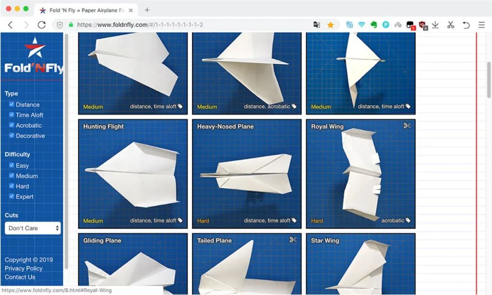
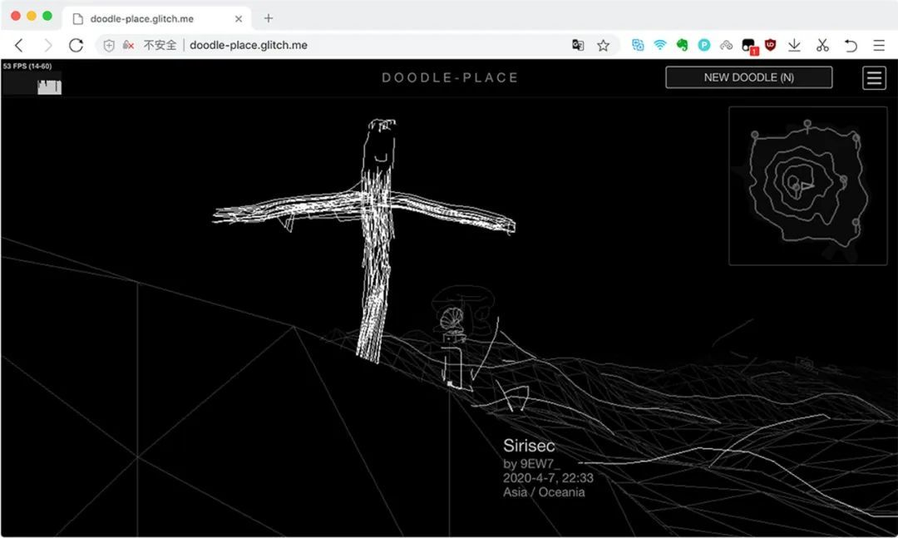
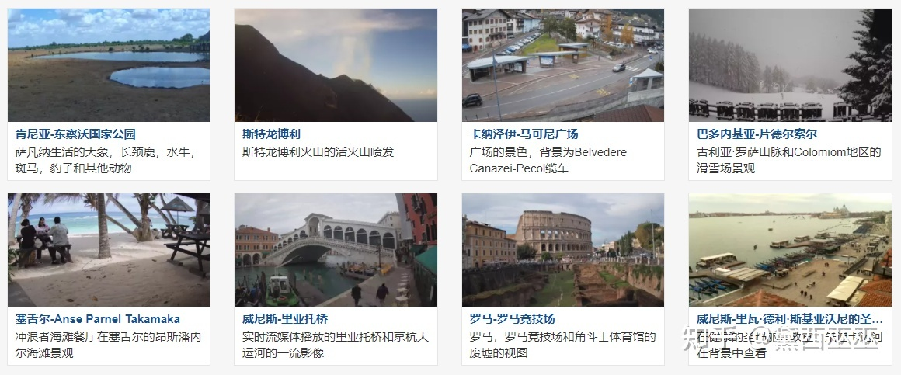
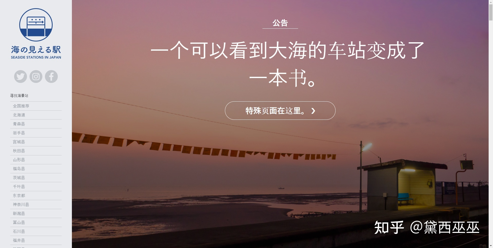
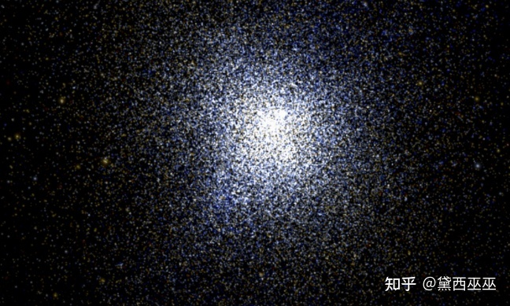

| Name |
What can you do |
Site's image |
links |
| Paper airplanes designs |
This site contains dozens of paper airplane folding methods, so try them on a single piece of paper! |
 |
Airplane |
| Koalas to the Max Com |
Move your mouse to see what happens! |
 |
Koalas to the Max Com |
| Doodle-place |
This is a painting website, and the paintings you draw will move! |
 |
Doodle-place |
| Skyline |
It is a collection of publicly available cameras from all over the world, providing real-time views of places of interest and natural beauty in various countries |
 |
Skyline |
| Seaside-station |
The website collects more than 300 stations in Japan that can see the sea |
 |
Seaside-station |
| 100000 stars |
This is an online star map site where you can observe more than 10 million stars up close |
 |
Stars |